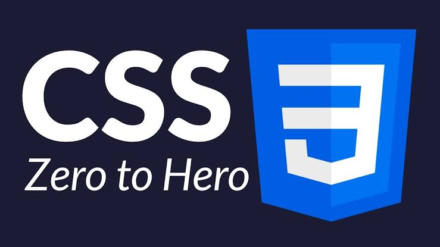
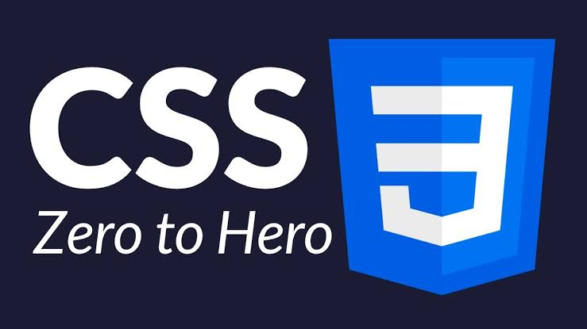

The corresponding links are below :

 


Java is a set of computer software and specifications developed by James Gosling at Sun Microsystems, which was later acquired by the Oracle Corporation, that provides a system for developing application software and deploying it in a cross-platform computing environment. Java is used in a wide variety of computing platforms from embedded devices and mobile phones to enterprise servers and supercomputers. Java applets, which are less common than standalone Java applications, were commonly run in secure, sandboxed environments to provide many features of native applications through being embedded in HTML pages. Writing in the Java programming language is the primary way to produce code that will be deployed as byte code in a Java virtual machine (JVM); byte code compilers are also available for other languages, including Ada, JavaScript, Python, and Ruby. In addition, several languages have been designed to run natively on the JVM, including Clojure, Groovy, and Scala. Java syntax borrows heavily from C and C++, but object-oriented features are modeled after Smalltalk and Objective-C.[12] Java eschews certain low-level constructs such as pointers and has a very simple memory model where objects are allocated on the heap (while some implementations e.g. all currently supported by Oracle, may use escape analysis optimization to allocating on the stack instead) and all variables of object types are references. Memory management is handled through integrated automatic garbage collection performed by the JVM. On November 13, 2006, Sun Microsystems made the bulk of its implementation of Java available under the GNU General Public License (GPL).[13][14] The latest versions are Java 13, released in October 2019, and Java 11, a currently supported long-term support (LTS) version ("Oracle Customers will receive Oracle Premier Support"), released on September 25, 2018; Oracle released for the "legacy" Java 8 LTS the last free "public update" in January 2019 for commercial use, while it will otherwise still support Java 8 with public updates for personal use up to at least December 2020. Oracle (and others) "highly recommend that you uninstall older versions of Java",[15] because of serious risks due to unresolved security issues.[16][17][18] Since Java 9 (and 10) is no longer supported, Oracle advises its users to "immediately transition" to Java 11 (Java 12 is also an non-LTS option). Oracle released the last public update for the legacy Java 8 LTS, which is free for commercial use, in January 2019. Java 8 will be supported with public updates for personal use up to at least December 2020. Oracle extended support for Java 6 ended in December 2018.[19]